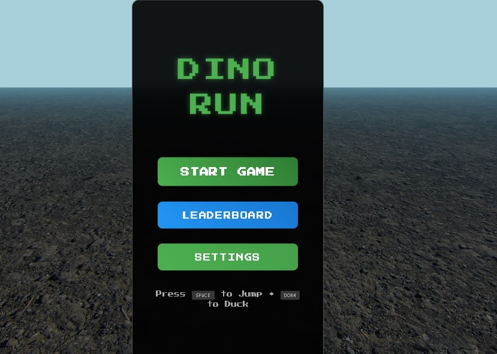

CLI Arena Ecosystem
Multi-stack simulation + logic testing environment for developers. Built using Shell, Go, React Native, FastAPI, and Unity — deploys across Web, Mobile, and CLI.
View on GitHubMulti-stack simulation + logic testing environment for developers. Built using Shell, Go, React Native, FastAPI, and Unity — deploys across Web, Mobile, and CLI.
View on GitHub
Python-based REST API that uses NLP to summarize Bible verses and add historical or archaeological context. Deployed with FastAPI + OpenAI API.
View on GitHub
Terminal-native Python CLI tool for log parsing, anomaly detection, and custom rule enforcement in cybersecurity pipelines.
View on GitHubChrome-inspired endless runner built in JavaScript with added 3D rendering, speed scaling, and dark-themed UI.
View on GitHubResponsive personal portfolio built with static HTML/CSS/JS. Features project showcase, contact form, resume download, and GitHub linking.
View on GitHub